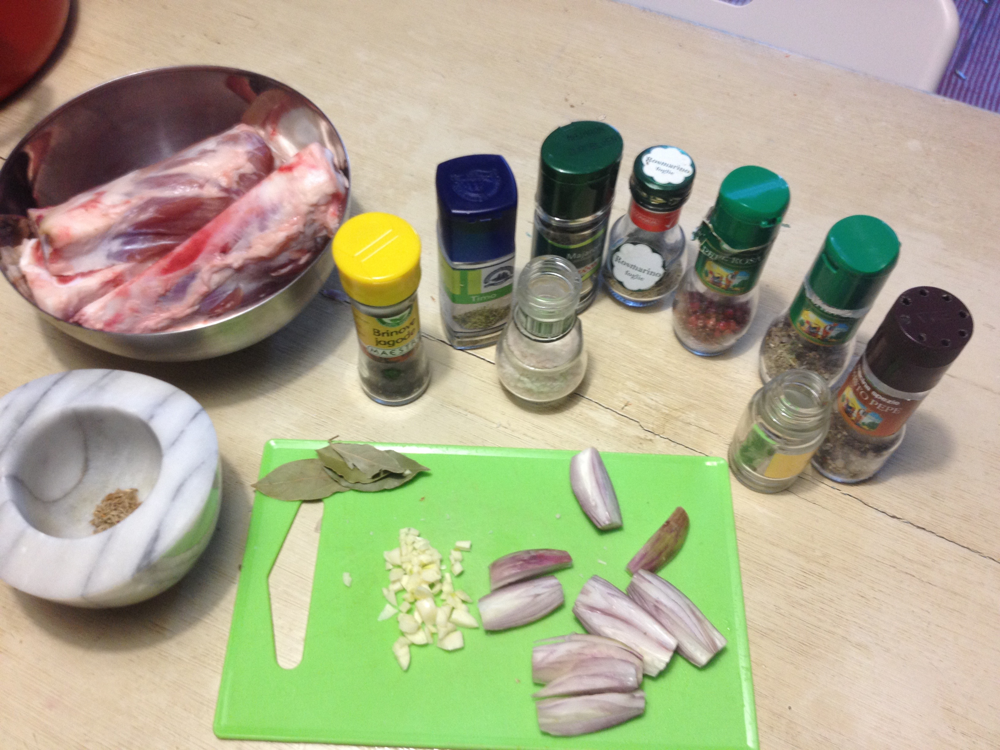
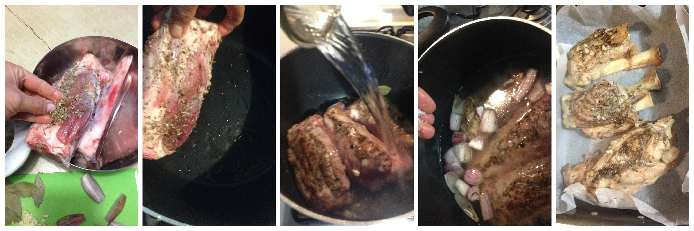

Schweinshaxe (pork shank)¶
- Serves: 2
- Type: main
Background¶
I am living in a northern region in Italy with Austrian influence on its culture. In this region, pork shank (called stinco) is a traditional plate. It is very popular during winter together with some hot vin brulé (Glühwein, or Mulled wine). It is roasted with aromatic herbs such as rosemary and savoy. During cooking the smell is so good that you won’t wait to eat it. This recipe is less greasy than the traditional way to cook. Instead of placing it directly in the oven and baking it in its own grease, we remove more grease by boiling the pork shanks.
Ingredients¶
2 pork shanks (it is better if the butcher cut it in halves)
1 sliced golden onion or 2 shallots
4 bay leaves
4 juniper berries
3 diced garlic cloves
1/2 teaspoon thyme
1/2 teaspoon marjoram
1 teaspoon rosemary
1/2 teaspoon red pepper flakes
1/2 teaspoon savoy
1 teaspoon black peppercorns
1/2 teaspoon cumin seeds
Salt and pepper to taste
Oil
Water (enough to cover the shanks)
Ingredients
Steps¶
Wash the pork shanks with water and dry them with kitchen paper
Grind the spices with a mortar
Smear the pork shanks with the spices
Heat a pot and pour some oil
Brown the pork shanks for all sides
Add the lay leaves, the onion or shallots, garlic cloves, salt and pour water until cover completely the pork shanks
Cover the pot with a lid and bring to boil for 25-30 minutes
Preheat the oven at 180°C and prepare a oven tin (using some oil or baking paper)
Remove the pork from the water and place it on the oven tin
Bake for 15 minutes or until it becomes crispy and brown all over.
Buon appetito!
Preparation
Can be served with¶
- Jacket potato (Sour cream jacket potato)
- Polenta
- Sauerkraut
- Mixed mushrooms sauté
- Knödel
- Gravy (:doc: ‘gravy’)